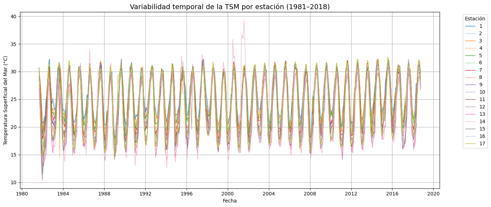
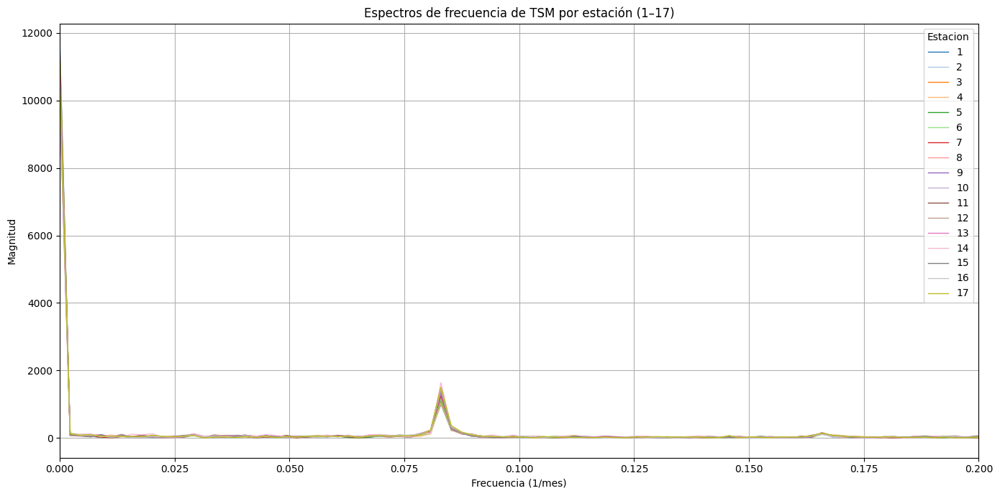
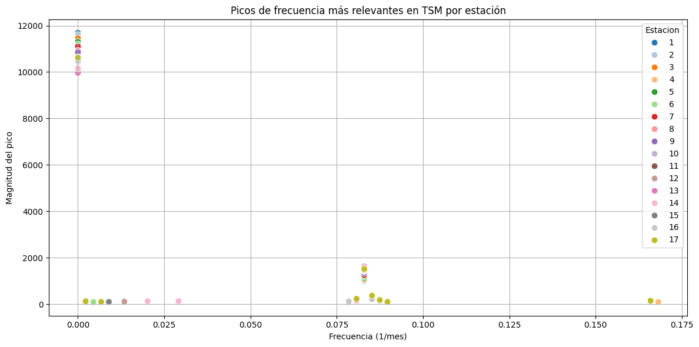
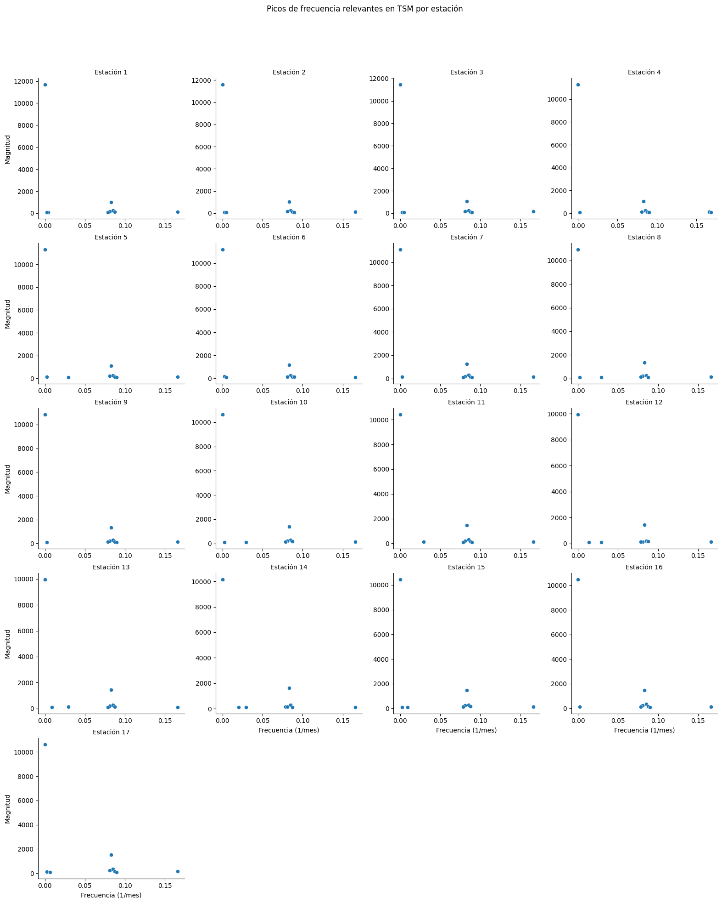
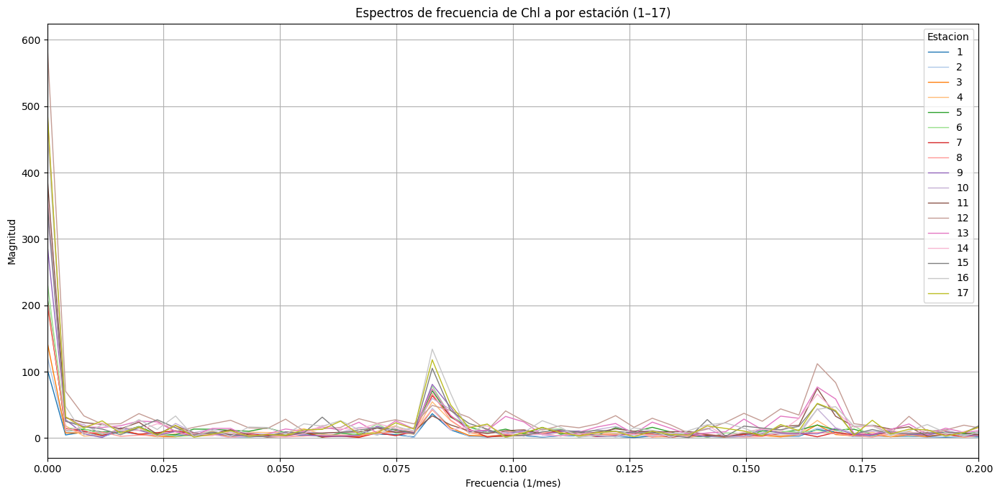
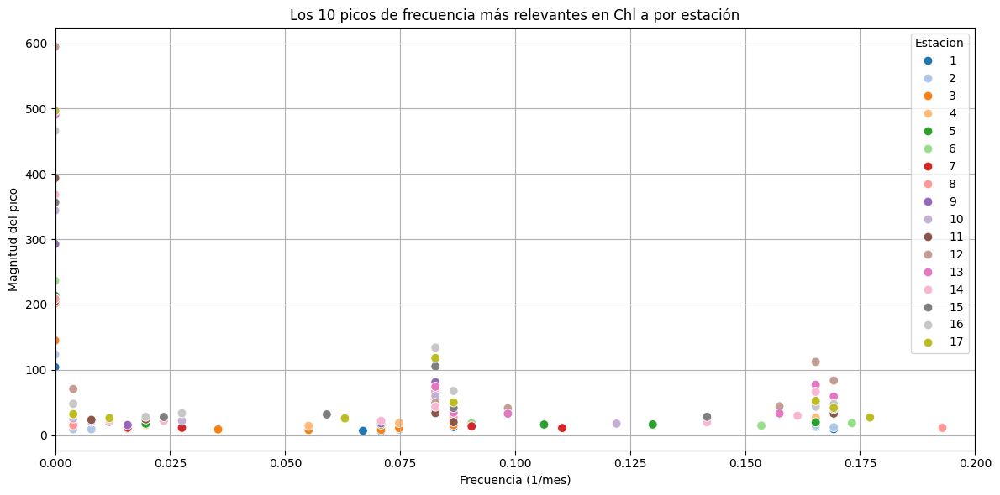
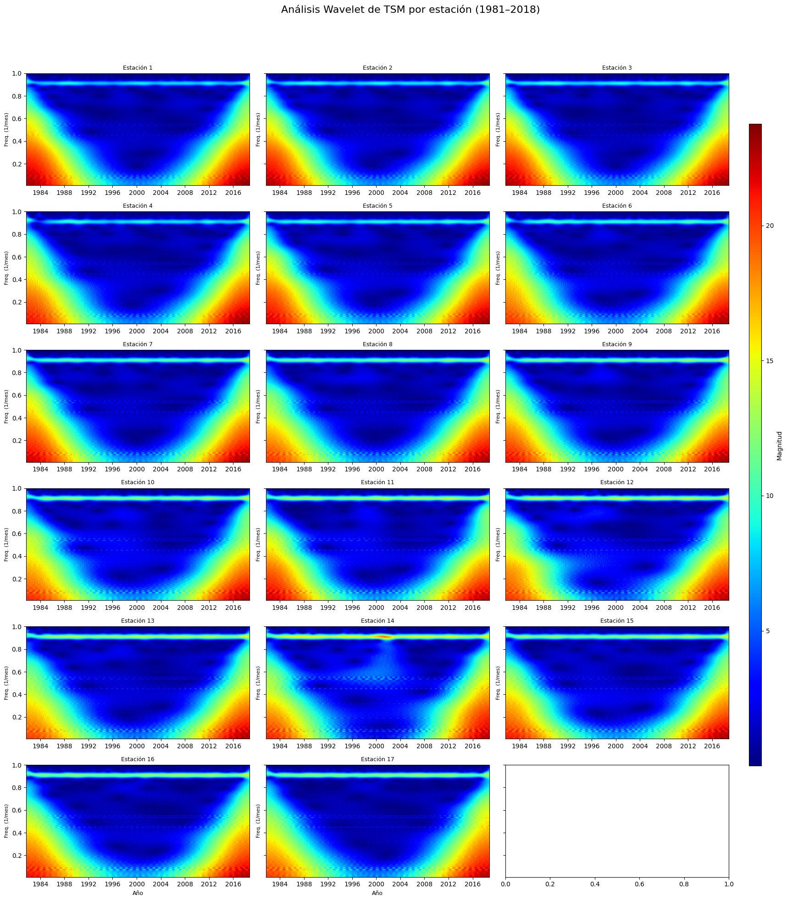

Análisis de frecuencia y espectral
Análisis de Frecuencia
En esta sección exploramos la variabilidad temporal de la Temperatura Superficial del Mar (TSM) a través del análisis de frecuencia. El objetivo principal es identificar patrones cíclicos o estacionales que se repiten en el tiempo, y que podrían estar asociados con fenómenos climáticos como ENSO o variaciones estacionales naturales.
TSM
La siguiente gráfica muestra la evolución temporal de la TSM para cada una de las estaciones analizadas en el periodo comprendido entre 1981 y 2018. Se puede observar un patrón estacional bien definido con oscilaciones anuales regulares, además de algunas anomalías notorias en ciertos periodos (como en las estaciones 12 y 13), que podrían estar relacionadas con eventos extremos o efectos locales.

A continuación, se presenta el espectro de frecuencia de la TSM para cada una de las 17 estaciones, obtenido a partir de la Transformada Rápida de Fourier (FFT). Este análisis permite descomponer la señal de temperatura en sus componentes de frecuencia, facilitando la identificación de ciclos predominantes en la serie temporal.
Como se observa en la gráfica, todas las estaciones presentan un pico muy marcado alrededor de la frecuencia 0.083 (1/mes), lo cual corresponde a un ciclo de 12 meses, es decir, un comportamiento anual. Este resultado es consistente con la fuerte estacionalidad observada previamente en las series de TSM.
Además del pico principal, también se aprecian armónicos menores que podrían estar asociados con subciclos intraanuales u otras oscilaciones menos intensas. La similitud en los espectros entre estaciones sugiere que, a grandes rasgos, todas siguen una dinámica estacional común, aunque con ligeras variaciones en la magnitud del pico dominante.

Para complementar el análisis espectral, en esta gráfica se identifican y visualizan los 10 picos de frecuencia más relevantes en la señal de TSM para cada estación. Cada punto representa un valor donde la Transformada de Fourier detecta un aumento significativo en la magnitud, lo que sugiere la presencia de un patrón cíclico dominante.
La mayoría de las estaciones presentan su pico más prominente cerca de la frecuencia 0, correspondiente al componente de baja frecuencia o tendencia de largo plazo. Sin embargo, el pico más importante desde el punto de vista cíclico ocurre consistentemente en la frecuencia cercana a 0.083 (1/mes), lo cual confirma nuevamente la fuerte estacionalidad anual presente en la TSM.
Además, algunas estaciones presentan picos adicionales en frecuencias más altas, posiblemente relacionados con ciclos semestrales o variaciones interanuales. Es interesante notar que la magnitud de estos picos secundarios puede diferir entre estaciones, lo que indica que la intensidad de los patrones cíclicos puede variar espacialmente a lo largo del Golfo de California.
Este tipo de análisis resulta útil para entender mejor no solo qué tan estacional es la serie, sino también qué tan complejos son los patrones temporales en cada punto del sistema.
Picos de frecuencia en la serie de TSM
En esta visualización se presentan de forma desglosada los picos de frecuencia más relevantes para la Temperatura Superficial del Mar (TSM) por cada una de las 17 estaciones analizadas.
Cada gráfico corresponde a una estación y muestra los 10 picos principales detectados en el espectro de frecuencia mediante la Transformada de Fourier. Esto permite examinar con mayor detalle las características individuales de la variabilidad cíclica de cada punto del Golfo de California.

Descomposición espectral por estación
Como se observa, en la mayoría de estaciones el pico dominante se concentra en torno a la frecuencia 0.083 (1/mes), que representa el ciclo anual. Sin embargo, también aparecen picos secundarios en frecuencias menores (relacionadas con variaciones de largo plazo) o mayores (posiblemente semestrales o incluso estacionales modificadas por factores locales).

Chl a
La gráfica presentada muestra los espectros de frecuencia para la clorofila a (Chl a) registrados en las 17 estaciones a lo largo del tiempo.
En la mayoría de las estaciones se observa un pico de magnitud considerable alrededor de la frecuencia 0.083 (1/mes), que, al igual que con la TSM, corresponde a un ciclo anual. No obstante, comparado con los espectros de TSM, la magnitud de los picos para clorofila es significativamente menor, lo que sugiere una mayor variabilidad y ruido en la señal biológica, probablemente asociada a procesos locales, respuestas ecológicas rápidas y/o eventos episódicos.
También pueden apreciarse pequeños picos secundarios en otras frecuencias, los cuales podrían estar relacionados con ciclos estacionales o respuestas a condiciones oceanográficas específicas.

Picos de frecuencia en la serie de clorofila a
Los resultados muestran una mayor dispersión de frecuencias dominantes respecto a lo observado en la TSM. A diferencia de la temperatura, donde la frecuencia anual fue claramente predominante en todas las estaciones, en Chl a se observan picos importantes tanto en frecuencias estacionales (alrededor de 0.083 1/mes) como en otras frecuencias más altas, lo que sugiere una dinámica más compleja y posiblemente más sensible a fenómenos de menor escala temporal.
También resalta el hecho de que no todas las estaciones comparten los mismos patrones dominantes. Esto podría estar relacionado con condiciones oceanográficas locales, diferencias en la productividad biológica o la influencia diferenciada de eventos como El Niño o La Niña sobre la biomasa fitoplanctónica.

Descomposición espectral por estación
Estaciones 1 a 4 presentan picos más concentrados en frecuencias bajas, en particular alrededor de la frecuencia anual (~0.083 1/mes).
Estaciones del centro-norte y norte (como 9 a 13) muestran una mayor dispersión en la distribución de frecuencias, con picos en zonas tanto anuales como subestacionales, lo cual podría reflejar una respuesta más compleja de la biomasa fitoplanctónica a distintos forzantes.
En algunas estaciones del sur (por ejemplo, 16 y 17) se observan picos de magnitud considerable, con una menor contribución de frecuencias muy bajas, lo que podría implicar variabilidad más rápida y menos dependiente de ciclos anuales.
Estas diferencias espaciales refuerzan la idea de que la dinámica de la clorofila a es más variable y localizada que la de la temperatura superficial del mar (TSM),
Comparación espectral entre TSM y Clorofila a
Los espectros de frecuencia generados para las 17 estaciones muestran diferencias notables entre la variabilidad temporal de la temperatura superficial del mar (TSM) y la concentración de clorofila a (Chl a), tanto en la distribución de frecuencias como en la magnitud de los picos detectados.
Temperatura superficial del mar (TSM)
El análisis espectral de la TSM revela un patrón altamente consistente entre estaciones. En todas ellas se identifica un pico dominante en torno a la frecuencia de 0.083 (1/mes), correspondiente a una periodicidad anual. Este comportamiento refleja una fuerte influencia del ciclo estacional. Además, se observan armónicos adicionales, aunque de menor magnitud, que refuerzan la presencia de ciclos subanuales y sugiere una señal estable y periódica.
Clorofila a (Chl a)
En contraste, los espectros de clorofila a presentan una mayor dispersión entre estaciones, tanto en la ubicación como en la intensidad de los picos. Si bien muchas estaciones también evidencian un pico alrededor de la frecuencia anual, otros picos relevantes aparecen en frecuencias más altas, lo que indica la presencia de procesos de variabilidad a escalas subanuales o incluso mensuales. Esta diversidad sugiere que la dinámica de la Chl a está influida por múltiples factores, como procesos de afloramiento, disponibilidad de nutrientes, eventos meteorológicos, y respuestas biológicas que no siguen un patrón estrictamente estacional.
Síntesis
Mientras que la TSM responde predominantemente al ciclo anual con una señal limpia y uniforme, la variabilidad de la clorofila a es más compleja y heterogénea, mostrando una estructura espectral más rica y menos predecible. Esta diferencia refuerza la idea de que, si bien la temperatura puede actuar como modulador general, la Chl a está sujeta a una combinación de forzantes físicos y biológicos más dinámicos.
Análisis Espectral mediante transformada wavelet
TSM
A diferencia de la transformada de Fourier, que proporciona información global en el dominio de la frecuencia, el análisis wavelet permite observar cómo varían las componentes de frecuencia a lo largo del tiempo. Esta propiedad resulta especialmente útil para detectar patrones transitorios o cambios en la periodicidad que puedan estar ligados a procesos oceánicos o climáticos no estacionarios.

La figura anterior muestra el espectro de potencia wavelet de la Temperatura Superficial del Mar (TSM) para cada una de las 17 estaciones, usando la transformada continua con wavelets complejas Morlet.
En el gráfico se puede observar
Dominancia de la variabilidad de largo plazo: En la mayoría de las estaciones, las zonas de mayor magnitud se ubican en escalas de tiempo amplias (bajas frecuencias), lo que indica una fuerte presencia de oscilaciones de largo periodo (varios años a décadas). Estas señales podrían estar asociadas a forzantes climáticos de baja frecuencia, como la Oscilación Decadal del Pacífico (PDO), que modulan la TSM a escalas multidecadales.
Variabilidad interanual significativa: En muchos paneles se observan zonas amarillas y anaranjadas en la parte media del espectro (~2 a 8 años de periodo), indicando una señal interanual robusta. Esta es típicamente atribuida a eventos como El Niño–Oscilación del Sur (ENOS), que afectan significativamente la dinámica oceánica superficial en la región.
Señal anual menos dominante: Aunque se puede identificar una banda de energía asociada al ciclo estacional (frecuencia cercana a 1/12 meses⁻¹), su magnitud es relativamente baja comparada con las componentes interanuales y de largo plazo. Esto sugiere que, si bien existe estacionalidad, no es la principal fuente de variabilidad energética de la TSM en estas series.
Variabilidad espacial: La intensidad y estructura del espectro varían entre estaciones, reflejando diferencias en la respuesta oceánica local. Algunas estaciones presentan mayor energía interanual o estacional, mientras que otras muestran predominancia de señales de largo plazo. Esto sugiere que la influencia de los forzantes climáticos varía espacialmente a lo largo del golfo.
Chl a
El análisis wavelet aplicado a las series de clorofila por estación revela una dinámica temporal notablemente más compleja y localizada que la observada para la TSM.

Dominancia de Variabilidad Subanual y Anual: A diferencia de la TSM, en muchas estaciones la energía se concentra en frecuencias más altas (parte superior de los gráficos), lo que indica una fuerte influencia de procesos subanuales o estacionales. Esto sugiere que la clorofila responde con mayor sensibilidad a cambios estacionales como la luz solar y la mezcla vertical.
Eventos Intermitentes de Alta Energía: En varias estaciones se observan manchas localizadas de alta magnitud en ciertos años y frecuencias específicas. Estas “explosiones” espectrales pueden estar asociadas a eventos de floraciones fitoplanctónicas o condiciones oceanográficas anómalas (como fuertes eventos El Niño o La Niña).
Variabilidad Espacial Marcada: Las diferencias entre estaciones son más evidentes en Chl a que en TSM. Algunas estaciones presentan mayor actividad en frecuencias altas de forma persistente, mientras que otras exhiben variabilidad más baja o energía concentrada en frecuencias intermedias.
Poca Influencia de Escalas Decadales: A nivel general, no se observa una dominancia de variabilidad de muy largo plazo (como en el caso de la TSM), lo que indica que los cambios en clorofila tienden a estar más ligados a forzamientos de corto a mediano plazo.
Resumen Comparativo: Variabilidad Espectral de TSM y Chl a
TSM: Predominan las señales de largo plazo, asociadas a fenómenos climáticos como la Oscilación Decadal del Pacífico (PDO) y El Niño-Oscilación del Sur (ENOS). La variabilidad es más uniforme entre estaciones.
Chl a: Presenta mayor variabilidad en escalas estacionales y subanuales, con eventos intermitentes de alta energía posiblemente relacionados con floraciones fitoplanctónicas. Existe una marcada heterogeneidad espacial entre estaciones.